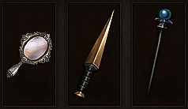

女巫 艾莉娜
“我已抛弃一切......唯有希望在指引着我。”
艾莉娜拥有与她年纪不相称的精湛的魔法技艺以及钢铁般的战斗意志，但是她出身的真相却让这一切变得理所当然。
艾莉娜来自于遥远的法师氏族战争年代，在那时候她是一个被称为先知之手的地下魔法姊妹会的成员。姊妹会的首领，被称为先知的人，预见到一场巨大的灾难即将在一千五百年后降临，艾莉娜和她的姐妹们誓要以生命阻止悲剧的发生。姐妹们不只是口头说说而已，先知将整个姊妹会笼罩在一个魔法休眠结界中，直到预定的时间来到。
最近，艾莉娜醒来了，她发现自己身处一个充满凶兆和动荡的世界，一块与记忆中完全不同的大陆。她的姐妹们都已死去，而先知也是无处寻觅。
尽管她对自己的处境感到震惊，艾莉娜的目的依然是明确的：她对找到新世纪的救赎而抱有希望。她那非凡的魔法将被证明是你把恶魔从庇护之地驱逐出去的关键性助力么？
关键特性
-
衰弱魔法艾莉娜的蛊惑法术就意味着你的敌人的厄运 - 她可以迫使他们进入一个梦境般的恍惚之中，或让他们自相残杀，使他们更容易被击杀。
-
奥术爆发艾莉娜可以召唤出奥术能量波来撕裂敌人的躯体，或击飞他们。 -
支援法术艾莉娜的实用法术，她为你的攻击注入屠杀恶魔之力，或者施放守护力场保护你免遭危险。
技能
随着经验的增长，艾莉娜可以习得让目标残废或控制攻击者（击退、减速或让他们受到更多伤害），以及更多通用的法术或咒语来增强你的防御力、攻击速度、甚至反射袭来的远程攻击。
特色装备
在战斗中，艾莉娜提供远程协助，主要是通过法杖施放法术以及其他魔法道具来迷惑她的敌人，并保护她的盟友。她的幻术魔术并不能造成巨大的伤害，而主要是扭曲和歪曲其他人的精神。 艾莉娜的独有装备 - 魅术主要就是与占卜术和催眠术相关，比如说眼球以及魔镜，唤起她远古的玄秘，极大地增幅她的能力。

装备变化

职业纹章